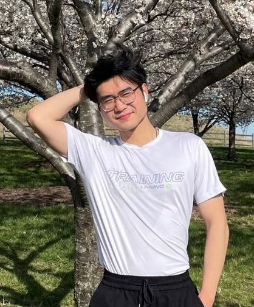
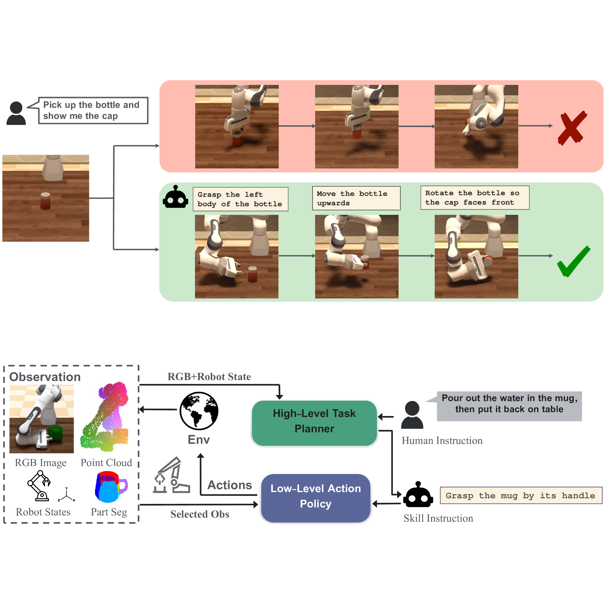
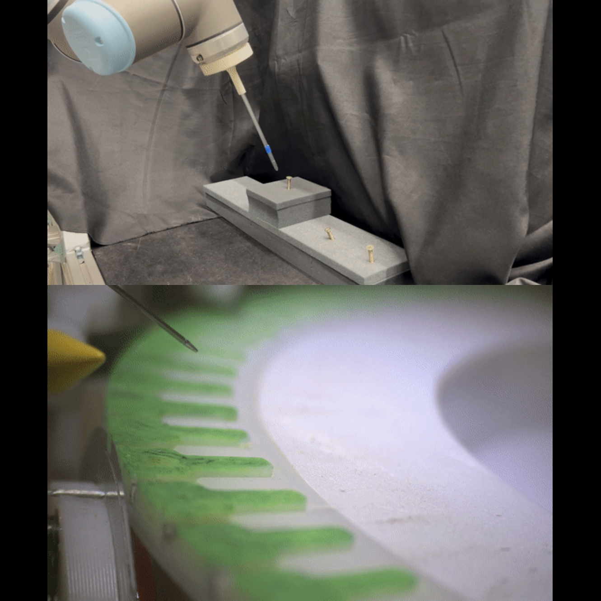
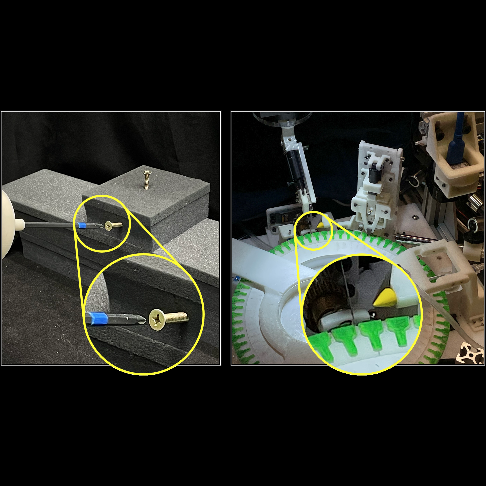

|
Yifan Yin I am a second-year Ph.D. student in Computer Science at Johns Hopkins University, advised by Professor Tianmin Shu. Before my Ph.D., I completed my M.S.E. degree with a major in Robotics in the Laboratory for Computational Sensing and Robotics at Hopkins, under the supervision of Professor Russell Taylor and Professor Emad Boctor. |
 |
{kind=link}
ResearchMy research is at the intersection of embodied AI, robotics, and human-robot interaction. My recent work focuses on (1) comprehensive 3D scene understanding; (2) world models for anticipation and evaluation of embodied state changes; (3) robot learning with multimodal reasoning and action policy learning; (4) integrated task and motion planning for embodied assistance and human-robot collaboration. |

|
Pragmatic Embodied Spoken Instruction Following in Human-Robot Collaboration with Theory of Mind
Lance Ying, Xinyi Li, Shivam Aarya, Yizirui Fang, Yifan Yin, Jason Xinyu Liu, Stefanie Tellex, Joshua B. Tenenbaum, Tianmin Shu arXiv We present SIFToM, a cognitively inspired neurosymbolic model that leverages a vision-language theory-of-mind framework to enable robots to robustly follow noisy spoken instructions in collaborative environments. |
|

|
Part-level Instruction Following for Fine-grained Robot Manipulation
Yifan Yin*, Zhengtao Han*, Shivam Aarya, Jianxin Wang, Shuhang Xu, Jiawei Peng, Angtian Wang, Alan Yuille, Tianmin Shu Robotics: Science and Systems (RSS), 2025 project page | arXiv | code We introduce PartInstruct, the first large-scale benchmark for training and evaluating fine-grained robot manipulation policies using part-level instructions. |
|


|
Applications of Uncalibrated Image Based Visual Servoing in Micro- and Macroscale Robotics
Yifan Yin, Yutai Wang, Yunpu Zhang, Russell H. Taylor, Balazs P. Vagvolgyi International Conference on Automation Science and Engineering (CASE), 2023 paper / arXiv We present a robust markerless image based visual servoing method that enables precision robot control without hand-eye and camera calibrations in 1, 3, and 5 degrees of freedom. |
|
Adapted from https://jonbarron.info/. |